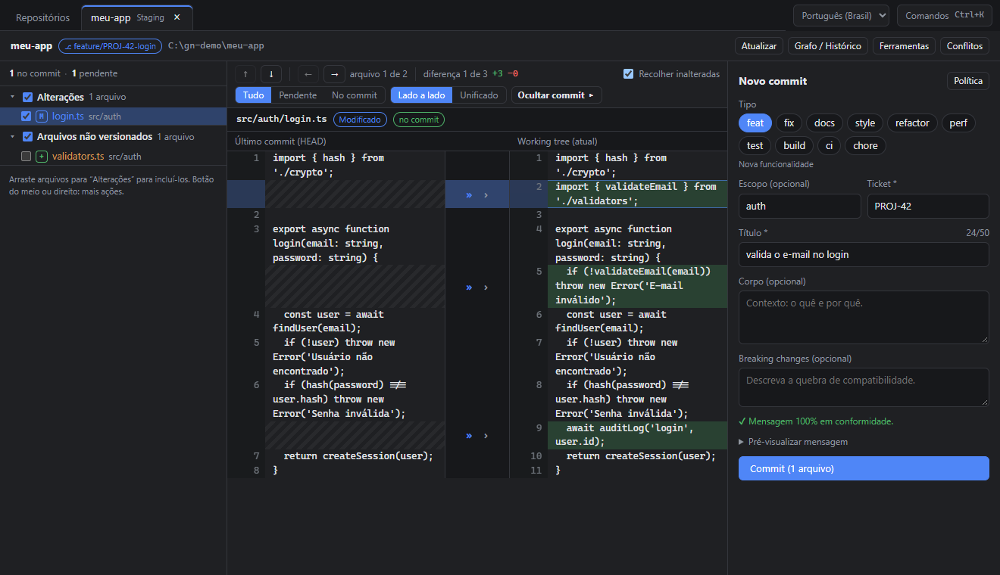
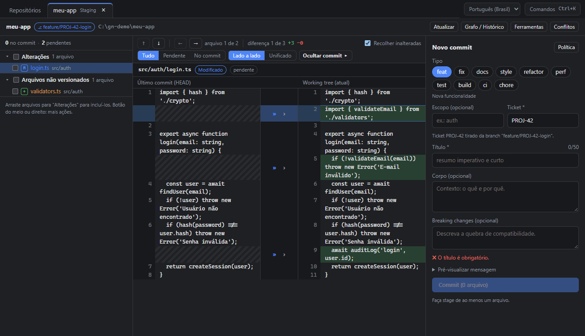
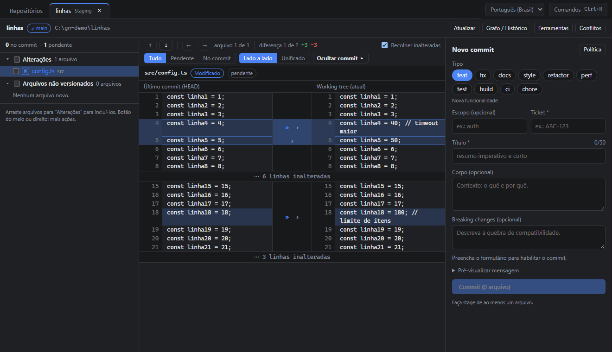
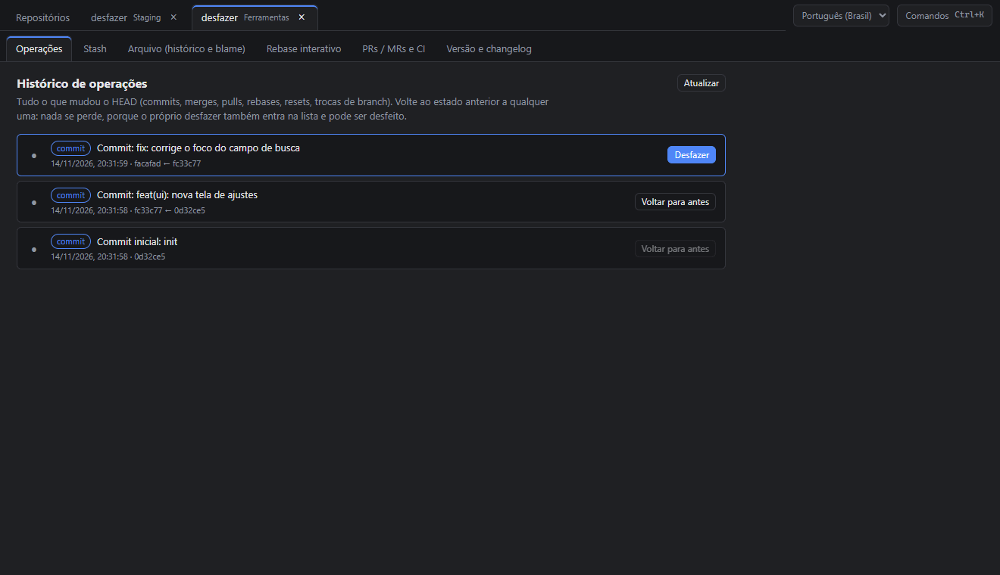
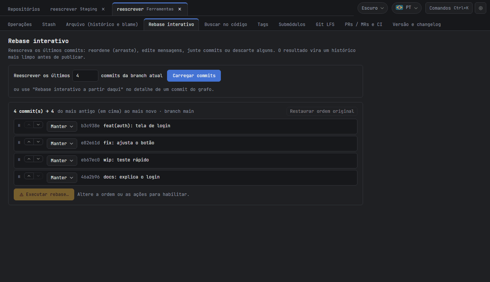
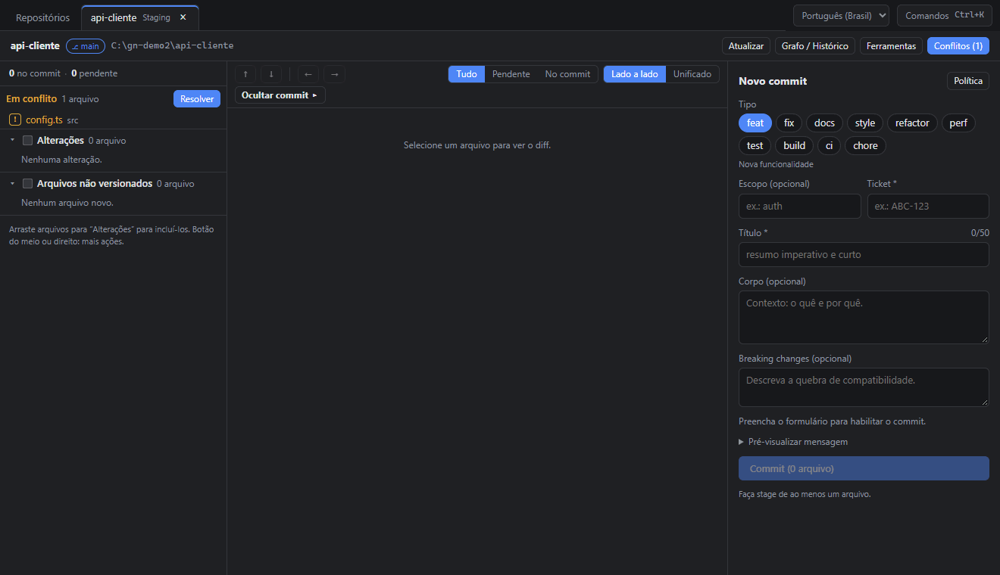
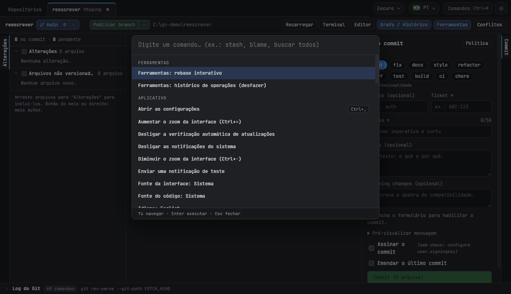

Portátil (sem instalar), 64 bits, de código aberto (GPL-3.0). Commits no padrão do time, stage por linha, desfazer de verdade, rebase visual, GitHub e GitLab, inclusive on-premise.

Cada um destes recursos é testado contra repositórios Git reais; os GIFs abaixo são da própria interface.
Um linter de Conventional Commits em tempo real, e o botão só habilita quando a mensagem está 100% conforme.
.gitnexus.json: tipos, escopos, regra de ticket.
Inclua no commit só o trecho que importa, com diff lado a lado. O restante continua pendente.

Todo commit, merge, pull, rebase e troca de branch entra num histórico de operações (o reflog) e pode ser desfeito. O próprio desfazer também.

Arraste para reordenar, junte commits, edite mensagens e descarte, sem editar o arquivo todo.

Três painéis (ours, base e theirs) e o resultado editável. Escolha por bloco ou para o arquivo todo; o botão só libera quando não resta nenhum marcador.
<<<<<<< sobrando.
Paleta de comandos com busca difusa e atalhos para quase tudo. Quem usa Git de verdade não precisa tirar a mão do teclado.

O que acompanha o dia a dia de quem mantém vários projetos.
Escolha o pacote do seu sistema. Os hashes SHA-256 de cada versão estão em SHA256SUMS.txt.
Disponível conforme os manifestos forem publicados nos catálogos (veja PACKAGING.md).
winget install Imozart.GitNexus # Windows (instalador por usuário) scoop bucket add gitnexus https://github.com/imozart/scoop-gitnexus scoop install gitnexus # Windows (portátil) brew install --cask imozart/gitnexus/gitnexus # macOS